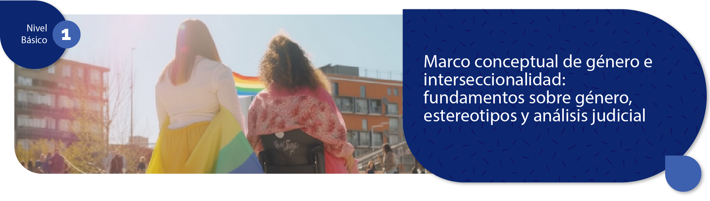

Marco conceptual de género e interseccionalidad
Fundamentos sobre género, estereotipos y análisis judicial
Este espacio de formación ha sido diseñado para acompañarle en un primer acercamiento conceptual, histórico y reflexivo a temas fundamentales para la administración de justicia, como el género, la interseccionalidad, los estereotipos, los sesgos y su influencia en la interpretación de la realidad y de los casos que llegan al ámbito judicial.
A lo largo del curso, usted encontrará recursos de aprendizaje, actividades y evaluaciones que le permitirán avanzar de manera autónoma en la comprensión de estos contenidos, relacionándolos con situaciones propias del contexto judicial.
Acceda a los recursos de aprendizaje
Seleccione el recurso que desea consultar para avanzar en su proceso formativo.
Consulte la estructura del curso, la ruta metodológica, los objetivos de aprendizaje y las orientaciones generales para el desarrollo de las actividades.
Desarrolle la actividad de apertura prevista para reconocer conocimientos previos y contextualizar los principales temas del curso.
Explore el objeto virtual de aprendizaje para profundizar en los conceptos clave mediante un recurso interactivo y estructurado.
Responda el cuestionario dispuesto para afianzar los contenidos estudiados y valorar su comprensión de los conceptos abordados.